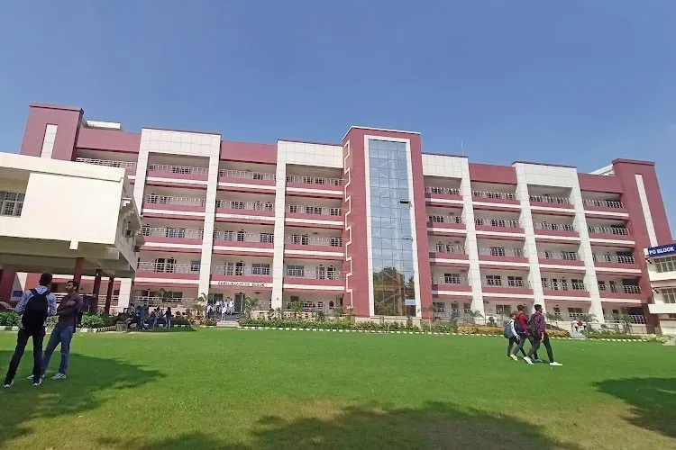
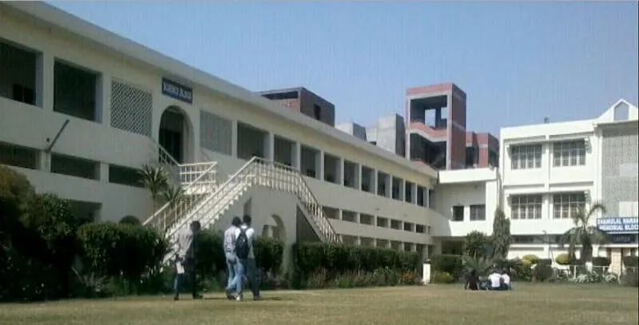
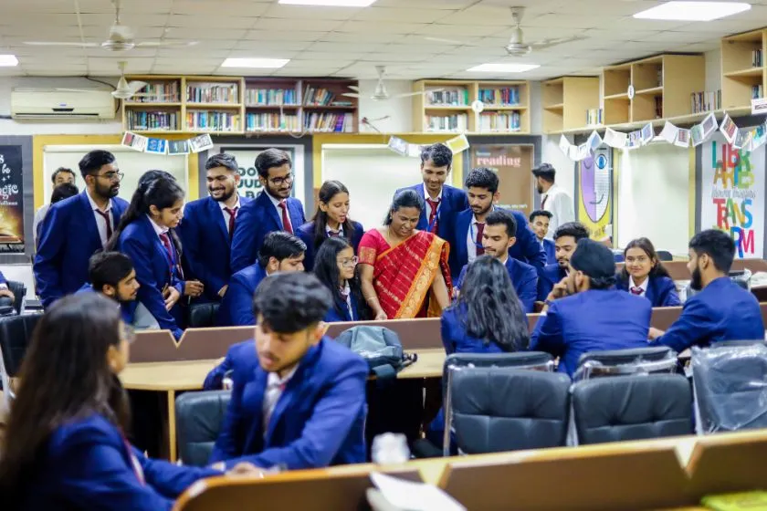
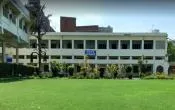

Government City College is one of the leading educational institutions in the region.
The college provides quality education and encourages innovation and research.
Students receive academic guidance along with opportunities for personal growth.
The campus offers modern facilities and a positive learning environment.




Government City College was established to provide higher education opportunities to students in the region. Over the years, it has expanded its academic programs and infrastructure. The college has produced many successful graduates who have contributed significantly to society and various industries.